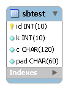

SysBench はAlexey Kopytov氏によってメンテナンスされているオープンソースソフトウェアで、以下の5種類のテストを行うことができる総合的なベンチマークツールです。ライセンスはGPLv2です。
OLTPベンチマークで用いられるデータベースのER図を以下に示します。テーブルは一つだけで、ごく単純な作りとなっています。
OLTPベンチマークは以下の4種類のテストモードを備えています。
complexモードで実行されるトランザクションの内容は以下のとおりです。主キーによる一意検索が10回、その他8種類のクエリは1回ずつ実行されます。この比率はカスタマイズ可能となっています。
SELECT c FROM sbtest WHERE id = :1;
SELECT c FROM sbtest WHERE id = :1;
SELECT c FROM sbtest WHERE id = :1;
SELECT c FROM sbtest WHERE id = :1;
SELECT c FROM sbtest WHERE id = :1;
SELECT c FROM sbtest WHERE id = :1;
SELECT c FROM sbtest WHERE id = :1;
SELECT c FROM sbtest WHERE id = :1;
SELECT c FROM sbtest WHERE id = :1;
SELECT c FROM sbtest WHERE id = :1;
SELECT c FROM sbtest WHERE id BETWEEN :1 AND :2;
SELECT SUM(k) FROM sbtest WHERE id BETWEEN :1 AND :2;
SELECT c FROM sbtest WHERE id BETWEEN :1 AND :2 ORDER BY c;
SELECT DISTINCT c FROM sbtest WHERE id BETWEEN :1 AND :2 ORDER BY c;
UPDATE sbtest SET k = k + 1 WHERE id = :1;
UPDATE sbtest SET c = :1 WHERE id = :2;
DELETE FROM sbtest WHERE id = :1;
INSERT INTO sbtest (id, k, c, pad) VALUES (:1, :2, :3, :4);
COMMIT;
SysBenchのOLTPベンチマークはMySQLをターゲットとして開発されていますが、Oracle DatabaseとPostgreSQLにも対応しています。
Tiny SysBenchは、SysBenchのOLTPベンチマークのうちcomplexモードをJdbcRunner上に移植したものです。以下の二つのスクリプトから構成されています。
Tiny SysBenchは以下のRDBMSに対応しています。
RDBMSのバージョンは実際に動作確認を行ったバージョンを示しており、これ以外のバージョンでも動作する可能性はあります。
MySQLにおけるテストの準備手順を以下に示します。Oracle Database、PostgreSQLについてはscripts/sysbench_load.jsのコメントをご参照ください。
MySQLにrootユーザで接続し、sbtestユーザを作成します。
> mysql -u root
mysql> GRANT ALL PRIVILEGES ON sbtest.* TO sbtest@'%' IDENTIFIED BY 'sbtest';
Query OK, 0 rows affected (0.00 sec)
ネットワーク環境によっては、接続元ホストを制限したりsbtestをより安全なパスワードに変更することをおすすめします。
sbtestデータベースを作成します。
mysql> CREATE DATABASE sbtest;
Query OK, 1 row affected (0.00 sec)
scripts/sysbench_load.jsを用いてテストデータの生成を行います。このスクリプトは以下の処理を行っています。
> java JR scripts\sysbench_load.js
01:41:56 [INFO ] > JdbcRunner 1.2
01:41:56 [INFO ] [Config]
Program start time : 20111011-014156
Script filename : scripts\sysbench_load.js
JDBC driver : -
JDBC URL : jdbc:mysql://localhost:3306/sbtest?rewriteBatchedStatements=true
JDBC user : sbtest
Load mode : true
Number of agents : 1
Auto commit : false
Debug mode : false
Trace mode : false
Log directory : logs
Parameter 0 : 0
Parameter 1 : 0
Parameter 2 : 0
Parameter 3 : 0
Parameter 4 : 0
Parameter 5 : 0
Parameter 6 : 0
Parameter 7 : 0
Parameter 8 : 0
Parameter 9 : 0
01:41:56 [INFO ] Tiny SysBench 1.0 - data loader
01:41:56 [INFO ] -param0 : Number of records (default : 10000)
01:41:56 [INFO ] Number of records : 10000
01:41:56 [INFO ] Dropping a table ...
01:41:56 [WARN ] JavaException: com.mysql.jdbc.exceptions.jdbc4.MySQLSyntaxErrorException: Unknown table 'sbtest'
01:41:56 [INFO ] Creating a table ...
01:41:56 [INFO ] Loading sbtest ...
01:41:57 [INFO ] sbtest : 1000 / 10000
01:41:57 [INFO ] sbtest : 2000 / 10000
01:41:57 [INFO ] sbtest : 3000 / 10000
01:41:57 [INFO ] sbtest : 4000 / 10000
01:41:57 [INFO ] sbtest : 5000 / 10000
01:41:57 [INFO ] sbtest : 6000 / 10000
01:41:57 [INFO ] sbtest : 7000 / 10000
01:41:57 [INFO ] sbtest : 8000 / 10000
01:41:57 [INFO ] sbtest : 9000 / 10000
01:41:57 [INFO ] sbtest : 10000 / 10000
01:41:57 [INFO ] Completed.
01:41:57 [INFO ] < JdbcRunner SUCCESS
「Unknown table ‘sbtest’」という警告は、存在しないsbtestテーブルを削除しようとして出力されるものです。無視して構いません。
また、-param0を指定することによってsbtestテーブルにロードするレコード数を変更することが可能です。デフォルトは1万レコードとなっています。
> java JR scripts\sysbench_load.js -param0 50000
scripts/sysbench.jsを用いてテストを実行します。JdbcRunnerを動作させるマシンは、テスト対象のマシンとは別に用意することを強くおすすめします。
Oracle Java SE/OpenJDKを利用する際は、Server VMを用いることをおすすめします。詳細は JDK 6 仮想マシン (VM) 関連 API & 開発者ガイド をご参照ください。
> java -server JR scripts\sysbench.js -jdbcUrl jdbc:mysql://server/sbtest
02:19:12 [INFO ] > JdbcRunner 1.2
02:19:12 [INFO ] [Config]
Program start time : 20111011-021911
Script filename : scripts\sysbench.js
JDBC driver : -
JDBC URL : jdbc:mysql://server/sbtest
JDBC user : sbtest
Warmup time : 60 sec
Measurement time : 180 sec
Number of tx types : 1
Number of agents : 16
Connection pool size : 16
Statement cache size : 20
Auto commit : false
Sleep time : 0 msec
Throttle : - tps
Debug mode : false
Trace mode : false
Log directory : logs
Parameter 0 : 0
Parameter 1 : 0
Parameter 2 : 0
Parameter 3 : 0
Parameter 4 : 0
Parameter 5 : 0
Parameter 6 : 0
Parameter 7 : 0
Parameter 8 : 0
Parameter 9 : 0
02:19:13 [INFO ] Tiny SysBench 1.0
02:19:13 [INFO ] Number of records : 10000
02:19:14 [INFO ] [Warmup] -59 sec, 150 tps, (150 tx)
02:19:15 [INFO ] [Warmup] -58 sec, 241 tps, (391 tx)
02:19:16 [INFO ] [Warmup] -57 sec, 268 tps, (659 tx)
02:19:17 [WARN ] [Agent 7] Deadlock detected.
02:19:17 [INFO ] [Warmup] -56 sec, 368 tps, (1027 tx)
02:19:18 [WARN ] [Agent 0] Deadlock detected.
02:19:18 [INFO ] [Warmup] -55 sec, 370 tps, (1397 tx)
...
02:23:09 [INFO ] [Progress] 176 sec, 379 tps, 67112 tx
02:23:10 [INFO ] [Progress] 177 sec, 353 tps, 67465 tx
02:23:11 [INFO ] [Progress] 178 sec, 370 tps, 67835 tx
02:23:12 [INFO ] [Progress] 179 sec, 355 tps, 68190 tx
02:23:13 [INFO ] [Progress] 180 sec, 376 tps, 68566 tx
02:23:13 [INFO ] [Total tx count] 68565 tx
02:23:13 [INFO ] [Throughput] 380.9 tps
02:23:13 [INFO ] [Response time (minimum)] 21 msec
02:23:13 [INFO ] [Response time (50%tile)] 40 msec
02:23:13 [INFO ] [Response time (90%tile)] 53 msec
02:23:13 [INFO ] [Response time (95%tile)] 58 msec
02:23:13 [INFO ] [Response time (99%tile)] 71 msec
02:23:13 [INFO ] [Response time (maximum)] 449 msec
02:23:13 [INFO ] < JdbcRunner SUCCESS
OLTPベンチマークのcomplexモードでは、デッドロックが発生することがあります。これはオリジナル版のSysBenchでも発生するものです。Tiny SysBenchはデッドロックが発生した場合、該当のトランザクションをロールバックして再度実行します。
Tiny SysBenchはスクリプトscripts/sysbench.jsの変数定義を修正することで、オリジナル版のSysBenchが持つ設定オプションをある程度再現することができます。変数はスクリプトのApplication settingsという箇所に定義されていますので、ここを修正してご利用ください。
// Application settings ----------------------------------------------
var DIST_UNIFORM = 1;
var DIST_GAUSSIAN = 2;
var DIST_SPECIAL = 3;
// Number of records in the test table
var oltpTableSize;
// Ratio of queries in a transaction
var oltpPointSelects = 10;
var oltpSimpleRanges = 1;
var oltpSumRanges = 1;
var oltpOrderRanges = 1;
var oltpDistinctRanges = 1;
var oltpIndexUpdates = 1;
var oltpNonIndexUpdates = 1;
// Read-only flag
var oltpReadOnly = false;
// Range size for range queries
var oltpRangeSize = 100;
// Parameters for random numbers distribution
var oltpDistType = DIST_SPECIAL;
var oltpDistIter = 12;
var oltpDistPct = 1;
var oltpDistRes = 75;
オリジナル版SysBenchとの対応表を以下に示します。
| SysBenchのオプション | sysbench.jsの変数 | 説明 |
|---|---|---|
| oltp-test-mode | (未対応) | テストモードを指定するオプションです |
| oltp-reconnect-mode | (未対応) | テスト中にデータベースに再接続する方式を指定するオプションです |
| oltp-sp-name | (未対応) | spモードで実行するストアドプロシージャを指定するオプションです |
| oltp-read-only | oltpReadOnly | SELECT文のみを実行するオプションです |
| oltp-skip-trx | (未対応) | BEGIN/COMMIT文をスキップするオプションです |
| oltp-range-size | oltpRangeSize | 範囲検索クエリの検索範囲を指定するオプションです |
| oltp-point-selects | oltpPointSelects | 一意検索クエリの回数を指定するオプションです |
| oltp-simple-ranges | oltpSimpleRanges | 範囲検索クエリの回数を指定するオプションです |
| oltp-sum-ranges | oltpSumRanges | 範囲検索して集計するクエリの回数を指定するオプションです |
| oltp-order-ranges | oltpOrderRanges | 範囲検索してソートするクエリの回数を指定するオプションです |
| oltp-distinct-ranges | oltpDistinctRanges | 範囲検索して重複を省くクエリの回数を指定するオプションです |
| oltp-index-updates | oltpIndexUpdates | インデックス付き列を更新するクエリの回数を指定するオプションです |
| oltp-non-index-updates | oltpNonIndexUpdates | インデックスなし列を更新するクエリの回数を指定するオプションです |
| oltp-nontrx-mode | (未対応) | nontrxモードで実行するクエリを指定するオプションです |
| oltp-auto-inc | (未対応) | ID列にAUTO_INCREMENTを用いるかどうかを指定するオプションです |
| oltp-connect-delay | (未対応) | データベースに接続した後のスリープ時間を指定するオプションです |
| oltp-user-delay-min | (未対応) | クエリごとのスリープ時間の最小値を指定するオプションです |
| oltp-user-delay-max | (未対応) | クエリごとのスリープ時間の最大値を指定するオプションです |
| oltp-table-name | (未対応) | テストに用いるテーブル名を指定するオプションです |
| oltp-table-size | (ローダで指定) | テストに用いるテーブルのレコード数を指定するオプションです |
| oltp-dist-type | oltpDistType | 乱数生成方式を指定するオプションです |
| oltp-dist-iter | oltpDistIter | ガウス分布乱数を生成するための加算回数を指定するオプションです |
| oltp-dist-pct | oltpDistPct | 特殊分布乱数において、均一分布乱数の生成範囲を指定するオプションです |
| oltp-dist-res | oltpDistRes | 特殊分布乱数において、均一分布乱数の発生確率を指定するオプションです |